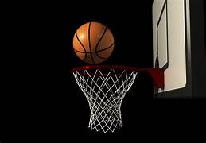
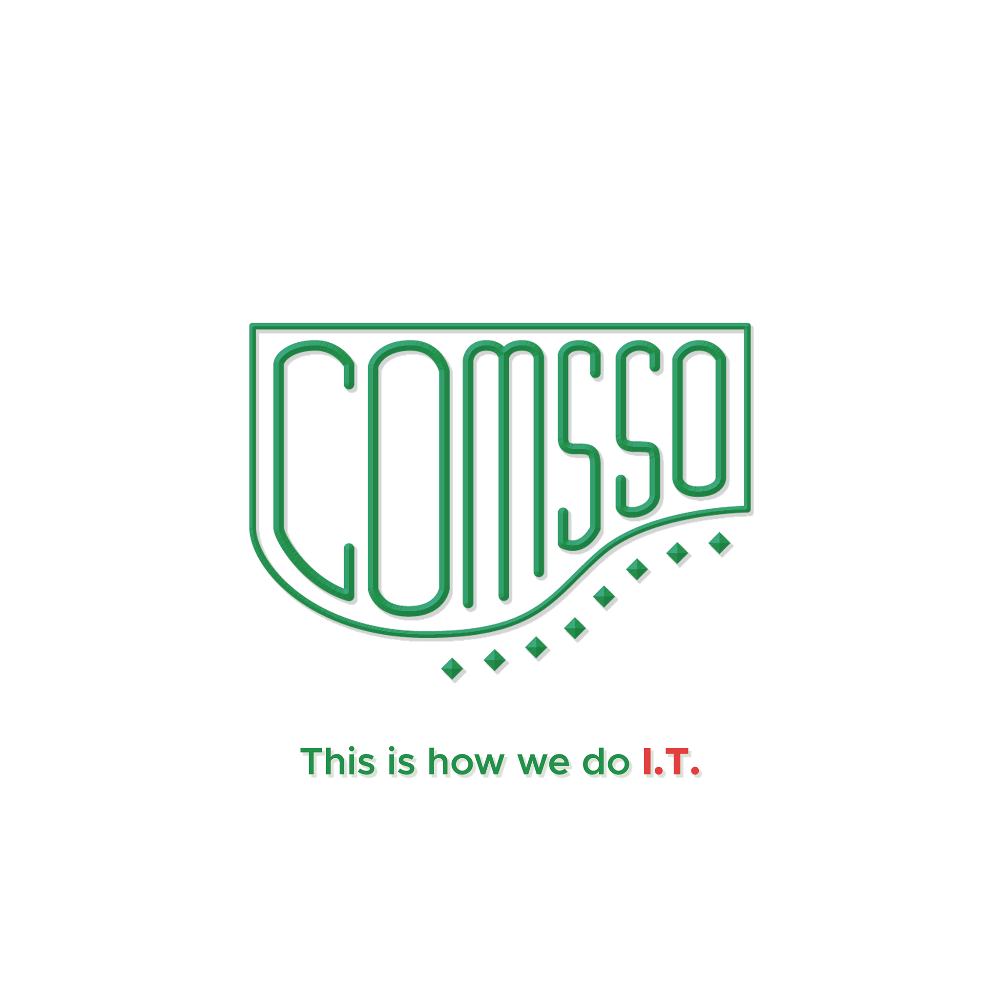
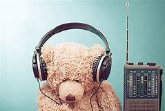
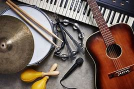
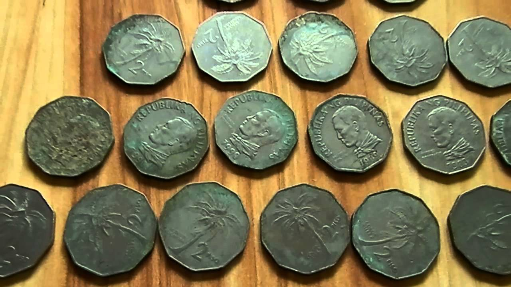

I think that I have some skills that I can't obviously notice.1
Honestly, I really don't know how to start this paragraph.2
But I know how to manage my time even there are so many things that I need to finish within a day.3
Every single day, I plan of what will I do tomorrow morning to prepare myself.4
I'm practicing myself to set my mind and living my life into a healthy lifestyle to become successful.5
I remember the day when I became a leader of summer camp in our church.6
I managed my groupmates to behave and follow my orders when the host was giving task to gain points.7
There are four groups and every group need to participate and enjoy the camp.8
On the very first of being a leader, I needed to be energetic and get along with my groupmates to know how thay communicate with other people.9
Most of them were great even there are elementary kids in our group who was so stubborn.10
I was happy to experience that kind of event that can help me to improve my personal skill.11
Because when I was a kid, I'm always shy to face people and do not know how to start a conversation when I need to ask someone.12
I'm also always staying in my room to play with my toys when my relatives visit us and the other kids asking me to play with them.13
I believe that everyone can improve themselves.14
They only need is to be bold and always try to communicate with others when they need help.15
My team got second third place, and we were happy for having that kind of reward.16
Even sometimes we had misunderstanding on a difficult situation, we did our very best.17
And also I won for being the Mr. Camper of the Year.18
After five days, I learned how to manage my time, discover new things when I'm doing nothing, dealt with a problem and appreciate others.19
Atlas! With so many people with different attitude and personality, I know how to place myself when I'm with them.20
MY HOBBIES
At the very young age, I've been addicted playing computer games.1
Every time I saw someone playing at the internet cafe, I really wanted to play with them.2
One day my older cousin ask me to play and teach me to play Dota.3
I've met different people and they always ask me to play with them it's because I'm good.4

Years gone by, at my elementary years, my school got invited at Inter-School Basketball League.5
My body was not fitted to play that kind of sport but I like shooting the ball using my hand.6
We practice thrice a week for the preparation.7
When the Inter-School Basketball League begun, we manage to win and advance to semi-finals.8
But unfortunately, we lost.9
Day after day after day, I played basketball inside the high-school near in our house.10
I played with the students of that school everyday even they are older than me and it helps my body and mind to become stronger.11

When I got to college, I had a lot of experience.11
I participated in UE Pop Idol, and COMSSO event that I managed to join in chess and spoken poetry.12
I've got second place in chess and spoken poetry.13
Obiously, I lost in UE Pop Idol because all I want was to experience how to sing at the stage.14
I am always telling myself that there is nothing to lose if you try even it was embarassing.15
My classmate supported my plans even they laugh at me.16
Every Friday, other sections was inviting our section to play against them on the basketball court in España.17
When the covid-19 got in our country, that was the saddest of being a college student.18
One year of staying at home because we are not allowed to go outside when there is no Travel Pass.19
I played mobile legends day after day.20
One day, my friends in our hometown ask me to ride a bike with them for our healthy living.21
Everyday, I rode a bike even if I'm alone.22
Healthy living is the best to all of us to live happily and longer.23
MY INTEREST

There are so many things that I'm' interested.1
One of my most common hobbies and interests is listening to music. 2
There are very few people on the planet who are not fascinated by music. 3
Only music has the ability to take you to a realm of serenity and tranquility when you are fatigued from a hard day at work. 4
Different genres of music appeal to different individuals, so whether you prefer jazz or classical music, heavy metal or light music, make music your daily dosage of motivation and strive to learn as much as you can from it.5

Learning to play a musical instrument not only provides us with a skill, but it also helps us avoid undesirable habits. 6
The best thing to do is to start doing this as soon as possible. 7
It is, however, never too late to develop good habits. 8
So, if you've been thinking about learning to play a musical instrument, now is the time to do it.9
And also The best approach to gain knowledge is to develop a habit of reading books. 10
It not only opens up a world of wisdom to us, but it also aids us in comprehending the people and environment around us. 11
A good book can be quite rewarding and can teach us about a variety of topics that we wouldn't be able to learn about from observation alone. 12
Understanding that reading is enjoyable is the best method to develop this habit. 13
Always have a good book on hand, and make a reading goal by scheduling time to read every day. 14

Stamp collecting and coin collecting are two fascinating hobbies. 15
You are not alone if you are new to stamp or coin collecting and have only recently developed the habit, or if you have always done it. 16
Thousands of individuals all around the world have the habit of collecting stamps and coins, and you should know that while collecting stamps and coins does not necessitate studies, it does necessitate enthusiasm and diligence. 17
You must be familiar with various coins from various locations, as well as stamps. Begin with your own home and keep an eye out for fresh stamps and coins. 18
Prepare to learn from others who have been doing this for longer than you. 19
These can help us to be more comfortable in life and become successful.20
 And also The best approach to gain knowledge is to develop a habit of reading books. 10
It not only opens up a world of wisdom to us, but it also aids us in comprehending the people and environment around us. 11
A good book can be quite rewarding and can teach us about a variety of topics that we wouldn't be able to learn about from observation alone. 12
Understanding that reading is enjoyable is the best method to develop this habit. 13
Always have a good book on hand, and make a reading goal by scheduling time to read every day. 14
And also The best approach to gain knowledge is to develop a habit of reading books. 10
It not only opens up a world of wisdom to us, but it also aids us in comprehending the people and environment around us. 11
A good book can be quite rewarding and can teach us about a variety of topics that we wouldn't be able to learn about from observation alone. 12
Understanding that reading is enjoyable is the best method to develop this habit. 13
Always have a good book on hand, and make a reading goal by scheduling time to read every day. 14